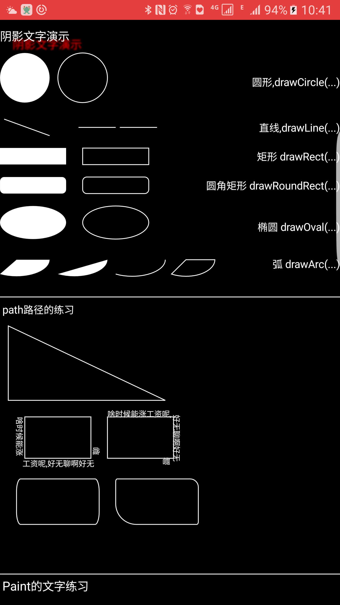
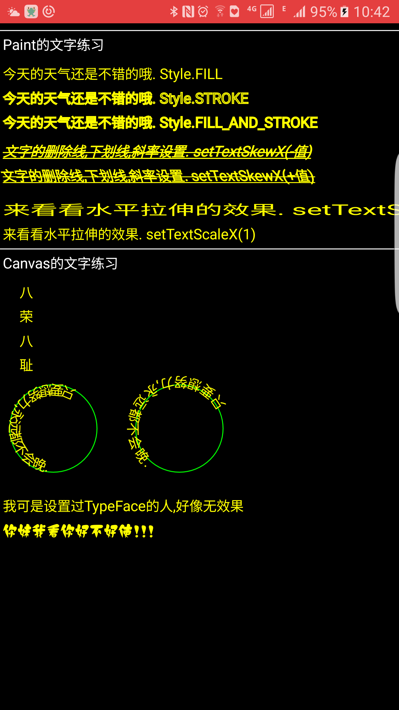
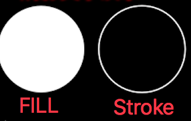
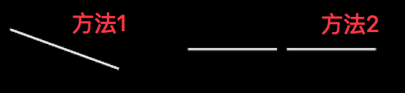
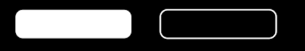
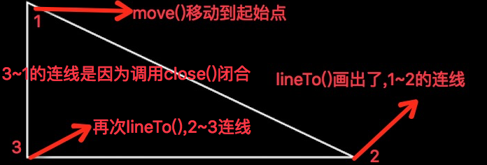
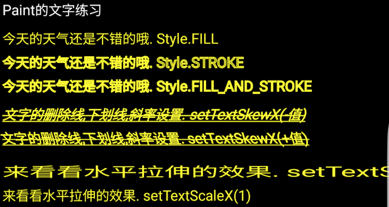
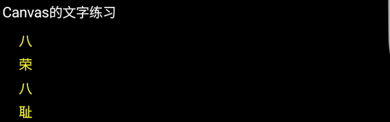
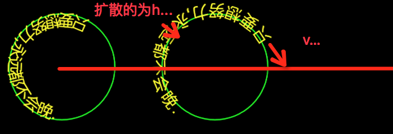
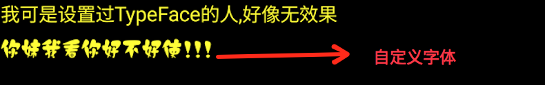

了解Cavans和Paint的具体用处,才可以更好的发挥他们的用户,方便我们应对不同的样式…
首先感谢启航blog,讲解的非常详细本文为整理笔记,让自己的认识加深.
首先贴上这篇我要记录的知识点的效果图
 看到效果还是很基础的东西.下面开始整理实现方法
源码下载: 查找SuGraphicsBaseCanvasPaintActivity类, 手机查看效果一级界面进入选择graphics模块
一.Paint和Canvas
自定义过View的对这两个属性应该不陌生. Paint画笔, Canvas画布. 有了这两个条件我们就可以做很多的事情.
如果你想直接画某一个图形那么就是用Canvas,如果你想设置一些属性如文字粗细,大小,颜色那么就使用Paint.
当我们要自定义View的使用,要养成在构造函数中创建出了Paint画笔对象,而不是在onDraw(),因为onDraw可能会在后续中频繁的刷新,如果在这其中设置了一些初始化的操作,那么就毫无意义并且浪费资源.
我们看一个Paint的基本属性设置:
注意本文或者后续文章中mDensity变量为当前屏幕密度比值,代码中使用是为了适配所有尺寸的手机都可以同比例的显示出来.如(720*1080(比值为2), 1080*1920(比值为3), 1440*2560(比值为4))
//开始设置画笔的基本信息
mPaint.setAntiAlias(true); //设置画笔的抗锯齿
mPaint.setColor(Color.WHITE); //设置画笔的颜色
mPaint.setStyle(Paint.Style.FILL); //设置画出的图形填充的类型,fill为内部填充,stroke为只有边框,内容不填充
mPaint.setStrokeWidth(mDensity * 2); //设置边框的宽度. 如矩形的边宽, 文字的宽度. 接收实参为像素单位
mPaint.setTextSize(mDensity * 20); //设置当绘制文字的时候的字体大小
Paint设置填充样式
setStyle (Paint.Style style)
- Paint.Style.FILL 填充内部
- Paint.Style.FILL_AND_STROKE 填充并描边
- Paint.Style.STROKE 仅描边不填充
看一下效果: 因为fill和fill_and_stroke相似不贴出效果
文字添加阴影
setShadowLayer (float radius, float dx, float dy, int color)
参数说明:
- radius: 值越大越模糊. 本质每一个像素点模糊的半径.
- dx: 生层的阴影水平方向移动偏移量
- dy: 生层的阴影垂直方向移动偏移量
- color: 生成阴影的颜色
代码实例
mPaint.setShadowLayer(mDensity*5, mDensity*15, mDensity*10, Color.RED ); |
给Canvas设置背景色
如果要给当前画布设置背景颜色,其实就是给画布添加一个颜色图层,最后合并的效果.有两个方法:
- canvas.drawColor(Color.BLUE);
- canvas.drawRGB(255, 255, 0); //这两个功能一样，都是用来设置背景颜色的。
画直线
drawLine (float startX, float startY, float stopX, float stopY, Paint paint)
参数说明:
- startX:开始点X坐标
- startY:开始点Y坐标
- stopX:结束点X坐标
- stopY:结束点Y坐标
代码示例:
//方法1 单条直线
canvas.drawLine(mDensity*5, 0, mDensity*60, mDensity*20, mPaint);
//方法2 多条直线
//定义一个数量为4的倍数的float类型的数组
float[] pts = {mDensity * 95,mDensity*10,
mDensity*140,mDensity*10,
mDensity*145,mDensity*10,
mDensity*190,mDensity*10};
canvas.drawLines(pts,mPaint);
效果演示:
方法2: 是根据一个点集合数组来画出线,可以是多条线. 最好定义为4的倍数的为数组的大小. 因为数组的每两个值分别对应点的xy点. 而两个点才能确定一个直线. 所以一条直线的前提是4个值.
画点
单个点
drawPoint (float x, float y, Paint paint)
多个点
drawPoints (float[] pts, Paint paint)
drawPoints (float[] pts, int offset, int count, Paint paint)
代码示例:
canvas.drawPoint(100, 100, paint);
float []pts={10,10,100,100,200,200,400,400};
canvas.drawPoints(pts, 2, 4, paint);
画矩形
这里要用到Rect或者RectF. 这两个都是矩形的辅助类,基本一样. 根据四个点左上, 右下来确定一个矩形.
最常用的创建方式例如Rect rect = new Rect(10, 10, 50, 30);
drawRect (float left, float top, float right, float bottom, Paint paint)
drawRect (RectF rect, Paint paint)
drawRect (Rect rect, Paint paint)
参数没有什么好说的了,要不在画矩形的时候明确出左上,右下. 要不就传入一个矩形辅助类对象.
代码示例:
//画矩形 实心
canvas.drawRect(0,0,mDensity*80, mDensity*20,mPaint); //参数12为矩形左上角的点, 参数34为矩形右下角的点
//矩形 空心
mPaint.setStyle(Paint.Style.STROKE);
canvas.drawRect(new RectF(mDensity*100,0, mDensity*180,mDensity*20),mPaint);
代码效果:
圆角矩形
drawRoundRect (RectF rect, float rx, float ry, Paint paint)
- rx: 生成圆角椭圆的X轴的半径
- ry: 生成圆角椭圆的Y轴的半径
和矩形相比只需要多指定四个角需要显示的圆角属性即可.
代码示例:
//圆角矩形 实心
canvas.drawRoundRect(new RectF(0,0,mDensity*80, mDensity*20), mDensity*5, mDensity*5 ,mPaint); //参数2,3 为圆角的xy的弧度半径
//圆角矩形 空心
mPaint.setStyle(Paint.Style.STROKE);
canvas.drawRoundRect(new RectF(mDensity*100,0,mDensity*180, mDensity*20), mDensity*5, mDensity*5 ,mPaint);
代码效果:
圆形
drawCircle (float cx, float cy, float radius, Paint paint)
参数说明:
- cx: 圆心x点坐标
- cy: 圆心y点坐标
- radius: 圆的半径
椭圆
drawOval (RectF oval, Paint paint)
椭圆是根据矩形生成的，以矩形的长为椭圆的X轴，矩形的宽为椭圆的Y轴，建立的椭圆图形
所以只需要传入个RectF即可, 这里不演示了.
弧
弧是椭圆的一部分，而椭圆是根据矩形来生成的，所以弧当然也是根据矩形来生成的.
drawArc (RectF oval, float startAngle, float sweepAngle, boolean useCenter, Paint paint)
参数说明:
- startAngle: 起始点,默认为坐标系x轴的正方向为0, 正值为顺时针旋转,负值反之
- sweepAngle: 从起始点开始需要显示的多少角度到结束点. 此角度正值为顺时针旋转.
- useCenter: 是一个boolean,如果为true那么开始到圆心,和结束点到圆心都有连线.反之没有.
在画弧中利用方法中的boolean,配合画笔的填充属性可以生成不同的图形.
例如:

代码示例:
//弧 有两边 fill实心 扇形实心
RectF rectF_ArcStart1 = new RectF(-mDensity * 20, 0, mDensity * 60, mDensity * 40);
canvas.drawArc(rectF_ArcStart1,0,120,true, mPaint); //arg2:为开始角度,从x坐标系的正方向为0度起始点. arg3是选装多少角度,为顺时针旋转
//弧 无两边 实心 圆的一部分
RectF rectF_ArcStart2 = new RectF(mDensity*50,0,mDensity*130, mDensity*40);
canvas.drawArc(rectF_ArcStart2,0,120,false, mPaint);
//弧 无两边 空心 弧边
mPaint.setStyle(Paint.Style.STROKE);
RectF rectF_ArcEnd1 = new RectF(mDensity*120,0,mDensity*200, mDensity*40);
canvas.drawArc(rectF_ArcEnd1,0,120,false, mPaint);
//弧 有两边 空心 扇形边框
mPaint.setStyle(Paint.Style.STROKE);
RectF rectF_ArcEnd2 = new RectF(mDensity*190,0,mDensity*260, mDensity*40);
canvas.drawArc(rectF_ArcEnd2,0,120,true, mPaint);
二.Path和DrawTetx练习
canvas对象不光可以直接画出指定的矩形,还可以通过自定义的Path路径绘制出图形. 比如手势绘画,不规则轨迹等等.
canvas.drawPath(Path path, Paint paint)
Path直线
绘制直线路径,只需要找到一个起始点,然后不停的话直线的就可以, 每次画直线的起始点都是上一次的结束点.
常用的函数:
- moveTo(float x, float y): 直接把下一次的起始点移动到某一个位置
- lineTo(float x, float y): 从上一次的起始点到指定的点画出连接点, 可以一直调用
- close: 如果最后Path的路径的最终点没有和起始点重合,那么调用close()就可以连接起点和终点,形成闭合
代码示例:
Path path = new Path();
path.moveTo(10*mDensity, 10*mDensity); //设定起始点
path.lineTo(10*mDensity, 100*mDensity); //第一条直线的终点，也是第二条直线的起点
path.lineTo(200*mDensity,100*mDensity); //画第二条直线
path.close();//闭环
canvas.drawPath(path, mPaint);
代码图示:
可以看到我们可以规划任意一条路径,然后调用drawPath一次性画出. 上面我们只调用了两次lineTo()方法,意思为两条线,但是效果有三条线,这就是close()闭合的意思,收尾相连.
Path矩形
当利用Path路径要画出一个图形的时候, 这里会有多出一个顺序的概念,如顺时针开始,或者逆时针开始.
addRect (float left, float top, float right, float bottom, Path.Direction dir)
addRect (RectF rect, Path.Direction dir)
这里给Path添加路径和直接利用canvas.drawRect()差不多,不过这里有一个Path.Direction参数,表示构建的矩形以什么顺序画出
- Path.Direction.CCW：是counter-clockwise缩写，指创建逆时针方向的矩形路径
- Path.Direction.CW：是clockwise的缩写，指创建顺时针方向的矩形路径
这样直接画出可能不好理解, 我们可以结合文字根据路径画出来查看效果
先看一下结果:

这样就很明显的看出区别了,下面贴出实现代码
//逆向生成矩形
Path CCWRectpath = new Path();
RectF rect1 = new RectF(30*mDensity, 10*mDensity, 110*mDensity, 60*mDensity);
CCWRectpath.addRect(rect1, Path.Direction.CCW);
//顺向生成生成
Path CWRectpath = new Path();
RectF rect2 = new RectF(130*mDensity, 10*mDensity, 210*mDensity, 60*mDensity);
CWRectpath.addRect(rect2, Path.Direction.CW);
//先画出这两个路径
canvas.drawPath(CCWRectpath, mPaint);
canvas.drawPath(CWRectpath, mPaint);
mPaint.setStyle(Paint.Style.FILL);
mPaint.setTextSize(10*mDensity);
//根据路径顺序画出文字, 参数2为路径, 参数3:每一边的头文字从原点的偏移量,相对于文字的左边开始为整数. 参数4: 每一行文字与所在路径的y轴偏移量,可以理解为值越大越远.
canvas.drawTextOnPath("啥时候能涨工资呢,好无聊啊好无聊",CCWRectpath,0,10*mDensity,mPaint);
canvas.drawTextOnPath("啥时候能涨工资呢,好无聊啊好无聊",CWRectpath,0,0*mDensity,mPaint);
可以看到前半部分根据路径绘制了矩形,但是这样我们不能看出任何效果, 所以使用了canvas.drawTextOnPath()函数,与之前用的drawText()其实差不多,参数2就是根据传入的path对象的path路径来以此绘制文字, 参数3,4,其实是偏移量. 参数3代表与路径的起始点多少距离开始,我们可以想想每个段落是不是都有空格.就是这个意思. 参数4是与路径的距离(上下偏移),比如高考作文都是画好了横线让我们在上面写字.当传入0的时候就压着线写,传入10,就是往上移动10,距离线10的位置.
Path圆角矩形
还记得canvas也可以直接drawRoundRect(), 其实canvas那几个在path都有,并且还增加了贝塞尔曲线等.
Path圆角矩形可以更灵活, 利用canvas画出的四个圆角是相等的,当时我们利用path添加圆角矩形却可以分别制定圆角的范围.
addRoundRect(RectF rect, float rx, float ry, Direction dir)
addRoundRect(RectF rect, float[] radii, Direction dir)
直接看图:

看到后面那个图片,每个角都不一样.
代码实现:
Path pathRoundRect = new Path();
RectF rectRoundCCW = new RectF(20*mDensity, 25*mDensity, 120*mDensity, 80*mDensity);
pathRoundRect.addRoundRect(rectRoundCCW, 5*mDensity, 15*mDensity , Path.Direction.CCW); //arg2,3: 为生成椭圆的横轴和竖轴半径
RectF rectRoundCW = new RectF(140*mDensity,25*mDensity, 240*mDensity, 80*mDensity);
float radii[] ={2*mDensity,3*mDensity,
10*mDensity,10*mDensity,
2*mDensity,3*mDensity,
25*mDensity,25*mDensity}; //必须为8个值, 对应四个角, 俩俩一堆为xy.
pathRoundRect.addRoundRect(rectRoundCW, radii, Path.Direction.CCW);
canvas.drawPath(pathRoundRect, mPaint);
我们可以直接调用制定四个形参的函数直接规定四个圆角都相等的方法. 也可以调用三个参数的函数,这个函数中第二个接收一个数组, 这个数组必须为8个,少于8个就会出现角标越界异常. 因为这个函数是需要制定四个圆角. 每个角包含两个点, 所以最起码需要8个才可能满足此函数.
其他Path图形
其实和canvas对应的drawXXX差不多, 就不一一说明
- 圆形: addCircle (float x, float y, float radius, Path.Direction dir)
- 椭圆: addOval (RectF oval, Path.Direction dir)
- 弧形: addArc (RectF oval, float startAngle, float sweepAngle)
- 赛贝尔: quadTo (float x1, float y1, float x2, float y2) 后面会详细讲解
Paint关于文字属性的设置
我们经常用的画笔属性写字可以认为基础属性,然后还有一些加粗下划线倾斜认为样式属性
普通属性
- setStrokeWidth(10) //画笔宽度
- setAntiAlias(true) //是否开启抗锯齿
- setTextSize(20) //设置文字大小
- setStyle(Paint.Style.FILL) //设置填充样式
- setTextAlign(Align.CENTER) //设置文字对齐方式 默认为Left对齐起始
样式属性
- setFakeBoldText(true) //设置为粗体
- setUnderlineText(true) //设置下划线
- setTextSkewX(0.5f) //设置倾斜率 负值为向右,正值向左
- setStrikeThruText(true) //设置删除线
- setTextScaleX(2) //水平拉伸
直接贴上效果
文字对应canvas绘制方式
1.普通绘制
- drawText (String text, float x, float y, Paint paint)
- drawText (CharSequence text, int start, int end, float x, float y, Paint paint)
- drawText (String text, int start, int end, float x, float y, Paint paint)
- drawText (char[] text, int index, int count, float x, float y, Paint paint)
我们常用的就是第一个, 3 4个为截取某一部分显示,不常用.
而第二个接收CharSequence,这个对象比较强大因为它不仅可以写字符还能添加bitmap.但是在canvas中貌似不支持charSequence. 所以此函数也就失去了意义.
2.指定位置绘制
- drawPosText (char[] text, int index, int count, float[] pos, Paint paint)
- drawPosText (String text, float[] pos, Paint paint)
我们直接以第二个构造函数说明. 这个函数是根据你指定的数组float的点,来以此绘制出文字. 所以到这我们使用时候要注意要绘制的字符串长度要和设定的数组长度为1:2的比例.否则可能会出错.
代码示例:
float []pos=new float[]{20*mDensity,25*mDensity,
20*mDensity,50*mDensity,
20*mDensity,75*mDensity,
20*mDensity,100*mDensity}; //注意这里的数组,俩俩一对, 对数要等于drawPostText的字符串长度,否则会出现越界异常
canvas.drawPosText("八荣八耻", pos, mPaint);//两个构造函数
图片示例:
3.根据路径绘制文字
在上面绘制的时候已经说过了,这里再用圆来演示一遍
关键代码:
canvas.drawTextOnPath("只要想努力,永远都不会晚.", circlePath, 45*mDensity, 0, mPaint);
//第二个路径，改变hoffset、voffset参数值 ,参数3偏移路径起始点的距离, 参数4效果向外扩张的效果
canvas.drawTextOnPath("只要想努力,永远都不会晚.", circlePath2, 20*mDensity, 8*mDensity, mPaint);
代码图示:
字体的TypeFace
Typeface是专门用来设置字体样式的，通过paint.setTypeface()来指定。可以指定系统中的字体样式，也可以指定自定义的样式文件中获取。要构建Typeface时，可以指定所用样式的正常体、斜体、粗体等，如果指定样式中，没有相关文字的样式就会用系统默认的样式来显示，一般默认是宋体。
typeface的构建方法
- create(String familyName, int style) //直接通过指定字体名来加载系统中自带的文字样式
- create(Typeface family, int style) //通过其它Typeface变量来构建文字样式
- createFromAsset(AssetManager mgr, String path) //通过从Asset中获取外部字体来显示字体样式
- createFromFile(String path)//直接从路径创建
- createFromFile(File path)//从外部路径来创建字体样式
- defaultFromStyle(int style)//创建默认字体
我们如果想快速创建一个TypeFace对象那么就使用默认方法defaultFromStyle()其中的style有四个属性:
- Typeface.NORMAL //正常体
- Typeface.BOLD //粗体
- Typeface.ITALIC //斜体
- Typeface.BOLD_ITALIC //粗斜体
设置字体传入familyName字符串无论是宋体,还是楷体.都无效果…. = =|||
自定义字体
把ttf的后缀的字体包放入到项目的.../app/src/main/assets/Fonts下, 如果没有Fonts文件夹手动创建.
然后代码如下:
//设置自定义的字体
Typeface myTypeFace = Typeface.createFromAsset(getContext().getAssets(), "Fonts/jian_luobo.ttf");
mPaint.setTypeface(myTypeFace);
canvas.drawText("你妹我看你好不好使!!!",10,50*mDensity, mPaint);
代码图例:
源码下载: 查找SuGraphicsBaseCanvasPaintActivity类, 手机查看效果一级界面进入选择graphics模块